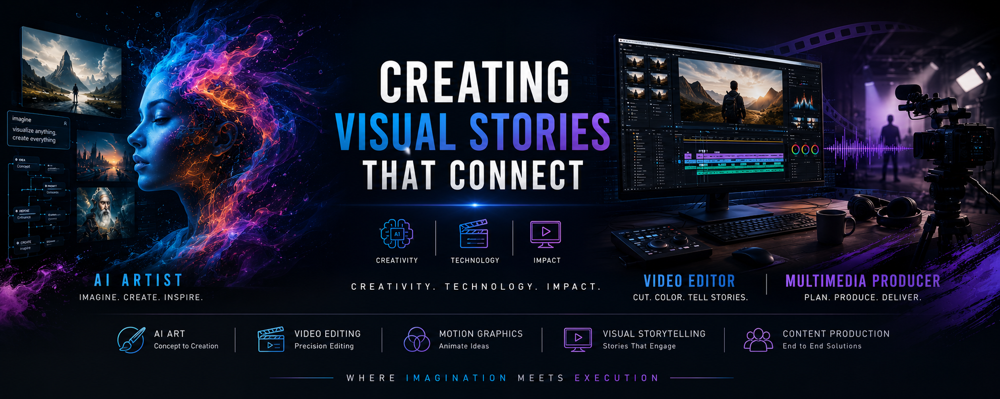

Video editing
Story-led editing for brand campaigns, fashion, product showcases, corporate films, and digital content.
VIDEO EDITOR · AI ARTIST · CREATIVE DIRECTOR
Hello, I’m Ganesan.
I bring stories to life through video editing, motion and AI. Based in Bengaluru, with 15+ years across fashion, broadcast, advertising and digital media.
Quickads
Myntra
Nvest Technologies
Cinimage Studios

AI art · Video editing · Multimedia production
Corporate films, commercials and visual concepts.
Browse my video work on Rumble.
I’m Ganesan, a video editor and AI artist based in Bengaluru. My work spans e-commerce, broadcast, corporate films, and digital media.
From fashion stories at Myntra to AI-powered advertising at Quickads, I bring storytelling, technical craft, and creative direction to every stage of production.
I combine traditional post-production with emerging AI tools to take an idea from its first concept to the final frame.
Story-led editing for brand campaigns, fashion, product showcases, corporate films, and digital content.
AI-generated visuals and video assets, shaped through prompt engineering and refined in post-production.
Concept development, shoot direction, and team leadership to carry a consistent vision through delivery.
Premiere Pro · After Effects · Photoshop · Illustrator · Final Cut Pro
AI-generated creative assets and video content for digital advertising campaigns.
Fashion editorials, product showcases, and brand campaigns for e-commerce.
Creative direction, team mentoring, on-location shoots, and end-to-end post-production.
Promotional videos, short films, and corporate storytelling.
LivedaySenior Video EditorMay 2016 — Mar 2018
Inner Eye World FilmsVideo Editor · ContractJan 2015 — Jun 2015
Sri Shankara TVVideo EditorDec 2013 — Dec 2014
Life Media TeamworkAssistant Video EditorMay 2010 — Nov 2013
Diploma · IMAGE Creative Education
Vadapalani, Chennai
Bachelor’s degree · Kanchi Sri Krishna College of Arts & Science, Kancheepuram
English Fluent · Tamil Native
Hindi · Kannada · Malayalam · Telugu Conversational
Let’s bring it to life.
+91 93801 82596